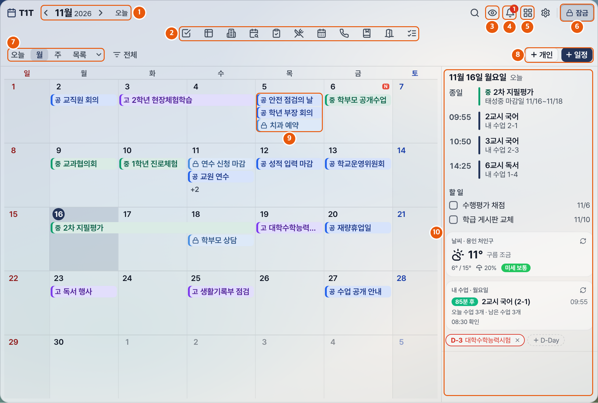

T1T 선생님 한 장 안내
태성중·고 학교 일정 공유 · v2.6.13 기준
T1T는 바탕화면에 띄워 두는 학교 달력입니다. 공유 일정, 내 수업, 시험감독, 급식을 한곳에서 봅니다.
PC 브라우저 주소창에 입력하면 구글 드라이브 폴더가 열립니다. 로그인은 필요 없습니다. 파일이 커서 바이러스 검사 경고가 나오면 무시하고 다운로드를 누릅니다.
Windows
T1T-Setup으로 시작하는 파일을 받아 실행합니다.- "Windows의 PC 보호" 경고가 뜨면 추가 정보 > 실행을 누릅니다.
Mac
mac 폴더에서 받습니다. M1 이후 칩은 arm64가 붙은 파일, Intel은 붙지 않은 파일입니다. 칩은 사과 메뉴 > 이 Mac에 관하여에서 봅니다.- dmg를 열어 T1T를 Applications 폴더로 끌어다 놓습니다.
- 처음 열 때 막히면 시스템 설정 > 개인정보 보호 및 보안에서 그래도 열기를 누릅니다.
처음 실행: 앱에서 회원가입을 누르고 이메일, 비밀번호, 이름, 학교를 넣습니다. 관리자가 승인하면 달력이 열립니다. 새 버전은 자동으로 받습니다.

화면의 일정과 이름은 예시입니다.
- 1달 이동. 오늘을 누르면 돌아옵니다
- 2도구 11가지. 마우스를 대면 이름이 나옵니다
- 3눈: 개인 일정 가리기, 보이기
- 4종: 내게 온 알림
- 5격자: 검색, 붙여넣기, 인쇄, 설정
- 6자물쇠: 창 위치 잠금. 잠가도 내용은 입력됩니다
- 7보기: 오늘, 월, 주, 목록
- 8+ 개인, + 일정: 일정 넣기
- 9달력 칸: 공 = 공통, 중 = 태성중, 고 = 태성고, 자물쇠 = 개인
- 10창이 넓으면 나오는 오늘 칸: 일정, 수업, 할 일, 날씨
일정 넣기
- 공유 일정: + 일정을 누르고 제목, 시간, 공유 대상을 넣습니다. 대상 선생님 화면에 바로 나타납니다.
- 개인 일정: + 개인을 누릅니다. 다른 사람에게는 보이지 않습니다.
- 바로 입력: 칸을 더블클릭하고 "3시 회의"처럼 씁니다. 기본은 개인 일정입니다.
- 쪽지·공문: 글을 복사해 달력에서 Ctrl+V를 누르면 날짜를 읽어 개인 일정 초안을 만듭니다.
알아 둘 것
- 단축키: Ctrl+Shift+H 가리기·보이기, Ctrl+Shift+C 위치 잠금·풀기. Mac은 Ctrl 대신 Cmd입니다.
- 끄기: 창의 X를 눌러도 트레이에서 계속 실행됩니다. 완전히 끄려면 트레이 아이콘을 우클릭해 종료를 누릅니다.
- 업데이트가 안 될 때: 위 주소에서 새 파일을 받아 덮어 설치합니다. 일정과 설정은 그대로입니다.
- 문의: 이봉기 선생님(학생성장플랫폼부), 교내 키폰 8270. 자세한 내용은 사용 안내서(PDF)를 봅니다.
수업 화면 보호
내 수업은 나이스 시간표에서 학교와 이름으로 자동 연결됩니다. 내 수업 시작 1분 전부터 끝날 때까지 개인 일정, 할 일, 직접 넣은 D-Day가 자동으로 가려집니다. 눈 아이콘이나 Ctrl+Shift+H로 직접 가리거나 보일 수 있습니다. 내 수업이 안 나오거나 틀리면 설정 > 내 시간표에 넣습니다. 예: 국어 2-1 2-3